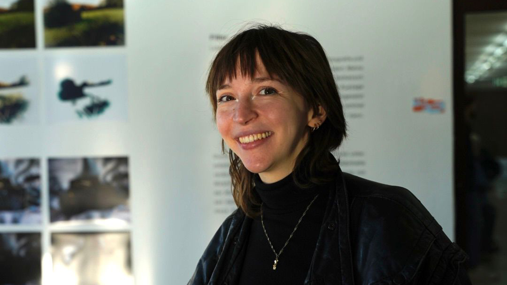

Fiona has been inspired by theatre and art since childhood. During her studies in Digital Media and Experiment at Bielefeld University of Applied Sciences, she explored a wide range of creative disciplines – from moving image, film, and audiovisual media to interactive installations and immersive experiences. During an internship in the Netherlands, she deepened her interest in the conception of museum exhibitions, focusing on the communication of cultural content. She contributed to projects that combine learning and experience in innovative ways. For her bachelor’s thesis, she developed the interactive live performance and installation Echoes of Light: Shaping Thoughtscapes, which deals with the theme of reflection. In this work, she explored how audiovisual design can evoke emotional responses and foster interaction between space, sound, and audience.
Fiona is currently pursuing her master’s degree in Interactive Media Systems at the University of Applied Sciences in Augsburg. In the 2024/25 season, she is also part of the digital division of the Staatstheater Augsburg, where she continues to expand her creative and technical expertise.
